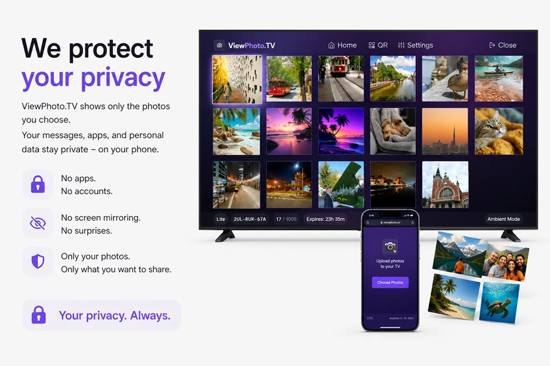
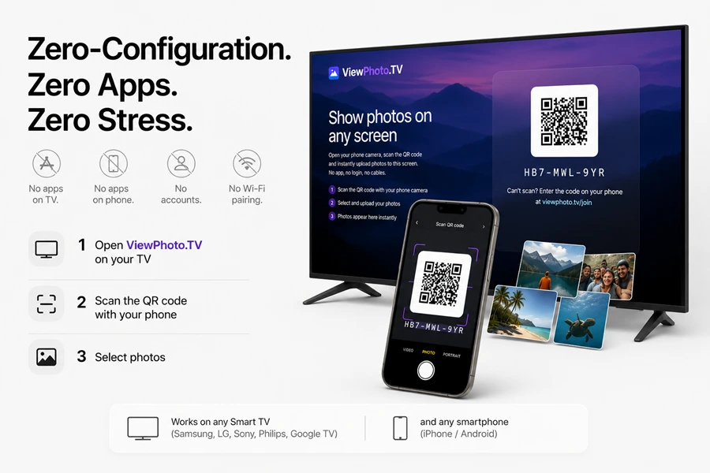
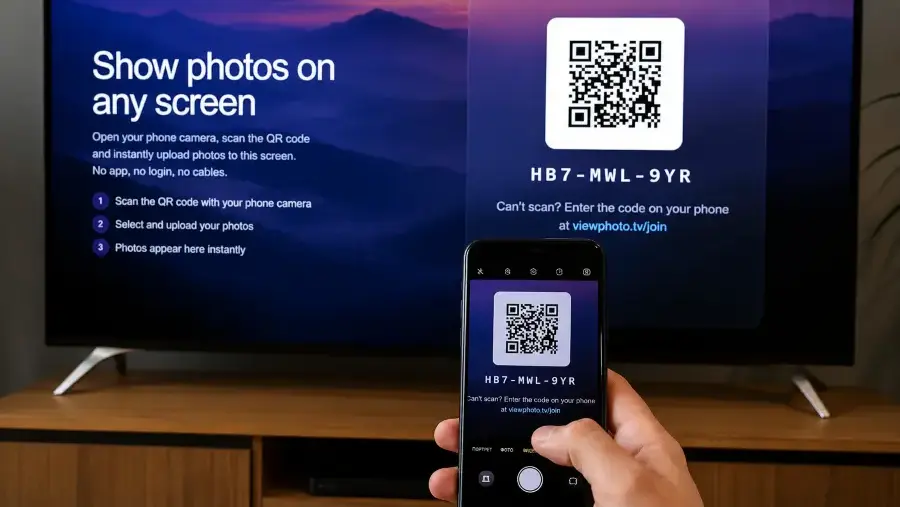
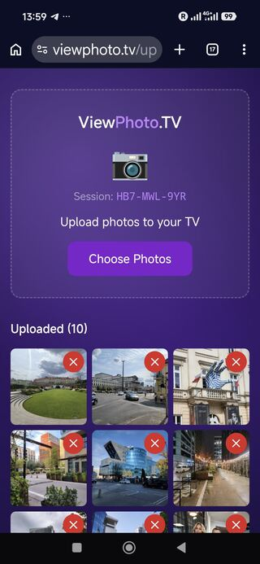
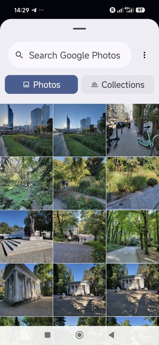
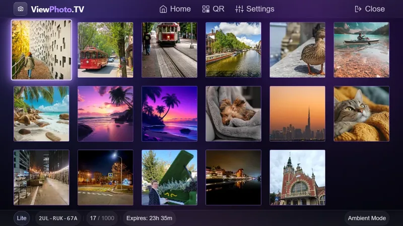

ViewPhoto.TV is a browser-based tool that lets you show selected photos on any Smart TV. You open the website on your TV, scan a QR code with your phone, and choose photos from your device, Google Photos, or iCloud Photos. Only the photos you select appear on the TV.
No apps. No accounts. No screen mirroring. Total privacy.
ViewPhoto.TV does not use screen mirroring. Your notifications, messages, and full photo library never appear on the TV. Only the photos you explicitly select are uploaded.
Photos are stored temporarily on Cloudflare and deleted automatically after the session. No permanent storage, no tracking, and no analytics.
Screen mirroring shows your entire phone screen, including notifications, messages, and your full photo library. ViewPhoto.TV shows only the photos you select.
No. ViewPhoto.TV works entirely in your browser.
Yes. It works on any Smart TV with a browser.
Yes. You can select photos from Google Photos or iCloud Photos using the browser photo picker.
Photos are stored temporarily and deleted automatically after the session.
No apps. No accounts. No screen mirroring.
Just the photos you choose.
Scan the QR code on the right from your phone. Select photos from your gallery, Google Photos, or iCloud — and they instantly appear on the big screen.
You're on a phone — perfect! Open the app, choose your photos, and watch them on your TV.
Open ViewPhoto.TV →Scan from your phone
or open app.viewphoto.tv
Screen mirroring exposes your entire phone - notifications, messages, private apps. But even worse:
Your entire photo library becomes visible on the TV - even the photos you never intended to show.

One swipe too far, and everyone sees something personal. ViewPhoto.TV eliminates that risk completely.
You can upload photos not only from your phone’s local gallery, but also directly from Google Photos or iCloud Photos using the standard browser photo picker - no apps, no logins, no setup.
“Share memories, not your private life.”
No apps on TV. No apps on phone. No accounts. No Wi‑Fi pairing.
Works on any Smart TV (Samsung, LG, Sony, Philips, Google TV) and any smartphone (iPhone / Android).

You can upload photos from your device storage or from Google Photos and iCloud Photos without installing anything - the browser handles everything natively.
Open viewphoto.tv in the browser on your TV. A secure temporary session with a unique QR code appears instantly.
No login. No installation. Just scan and go.

Choose exactly what you want to show - from your phone’s gallery, Google Photos, or iCloud Photos using the built‑in browser photo picker. Only the selected photos appear on the TV. Your full gallery and cloud albums stay private.


The selected photos instantly appear on your TV in a clean, beautiful gallery. You can browse them one by one, zoom in, or open any photo in full‑screen immersive mode — just like a native TV app.
Only the photos you chose are visible. Your full gallery, cloud albums, and private content remain hidden.

Traditional screen sharing exposes not only your notifications and messages - it exposes your entire photo library every time you scroll.
With ViewPhoto.TV, the TV shows only the photos you choose, keeping the rest of your gallery private.
ViewPhoto.TV works with your local photos and with cloud libraries like Google Photos and iCloud Photos through the standard browser photo picker - instantly and securely.
Your photos are yours. Your gallery stays private. Your data is never stored permanently.
ViewPhoto.TV is designed with privacy at its core - the same philosophy Apple uses for its own products.
Cloudflare acts only as a secure transport layer. All communication is encrypted via HTTPS.
Instead of passing one phone around, everyone can scan the QR code and upload photos to the shared screen in real time.